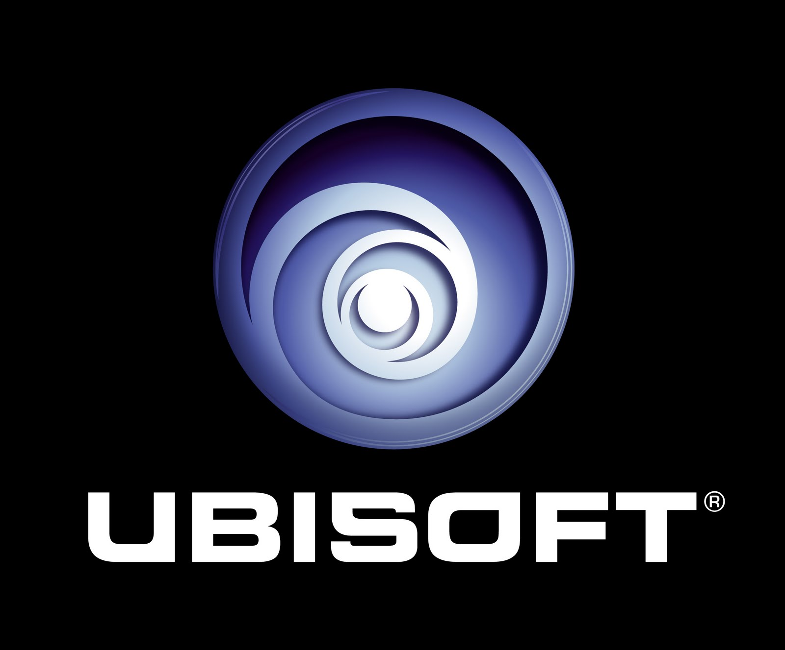

Gamen als hobby
Ubisoft
Ubisoft Entertainment (vroeger Ubi Soft) is een Franse ontwikkelaar en uitgever van computerspellen. Het bedrijf heeft 20 vestigingen in 16 landen. De hoofdvestiging is in

de Franse plaats Montreuil. Het bedrijf is in Europa het op twee na grootste onafhankelijke bedrijf dat computerspellen uitgeeft, de op drie na grootste in de Verenigde Staten en de op drie na grootste in de wereld (Japan uitgezonderd).
Ubisoft werd opgericht in Frankrijk in 1986 door vijf broers. Een van de broers, Yves Guillemot, maakte al snel afspraken met Electronic Arts, Sierra On-Line en MicroProse om hun spellen in Frankrijk te verspreiden. Tegen het einde van de jaren 1980 gingen ze ook in andere landen aan de slag, waaronder Groot-Brittannië, de Verenigde Staten en Duitsland.
In het jaar 2000 werd Red Storm Entertainment onderdeel van Ubisoft. Red Storm Entertainment ontstond, toen de schrijver Tom Clancy een kapitein van het Amerikaanse leger ontmoette, Doug Littlejohns. Omdat Clancy veel succes had met zijn laatste boek, The Hunt for Red October (De jacht op de Red October), vroeg Clancy aan Littejohns advies voor een nieuw boek, Red Storm Rising (Operatie Rode Storm). Twaalf jaar later had Tom Clancy een formule bedacht om een boek en een computerspel samen uit te brengen. Hij richtte Red Storm Entertainment op en onder die naam bracht hij de nieuwe formule op de markt. Littlejohns werd de directeur van het bedrijf. Later bracht Red Storm Entertainment alleen maar games uit, die zeer succesvol waren, waaronder Tom Clancy's Politika en Rainbow Six.
In 2004 nam Electronic Arts een belang van 20% in Ubisoft. In 2010 besloot EA om dit belang weer van de hand te doen.